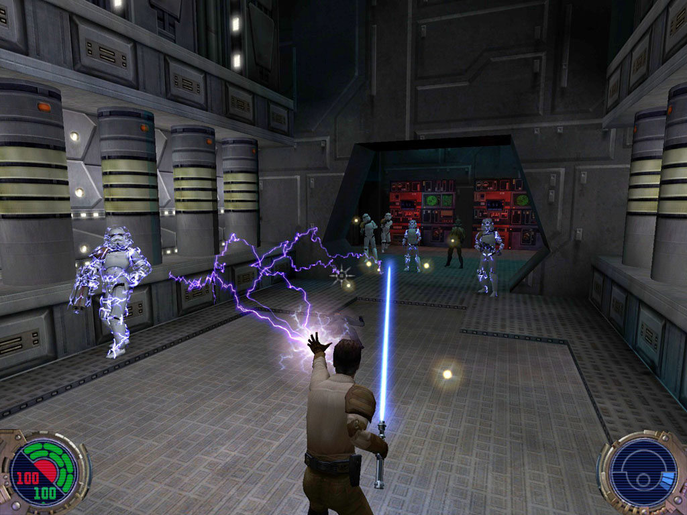

Star Wars Episode 1: Jedi Power Battles
Эта игра берет не своим исполнением, а тем, что в нее попросту интересно играть. И все по той простой причине, что разработчики взяли жанр Beat’em up и смешали это все с сеттингом Звездных войн, получив хорошую смесь. Да, были баги, да, визуально она средняя, зато члены Совета джедаев в ней представлены всяко лучше, чем в фильме.
Jedi Knights 2: Jedi Outcast
В целом серия этих игр была очень крутой, но в Jedi Outcast 2, где мы играли за Кайла Катарна, лучше всего смогли совместить шутер от первого лица и бой световым мечем от третьего. Также в ней хорошо реализовали использование силы. Именно эта игра установила планку того, как механика силы должна развиваться в последующих играх по Звездным войнам. Примечательно, что в игре был мультиплеер, где игроки надолго зависали в смертельных схватках на мечах.